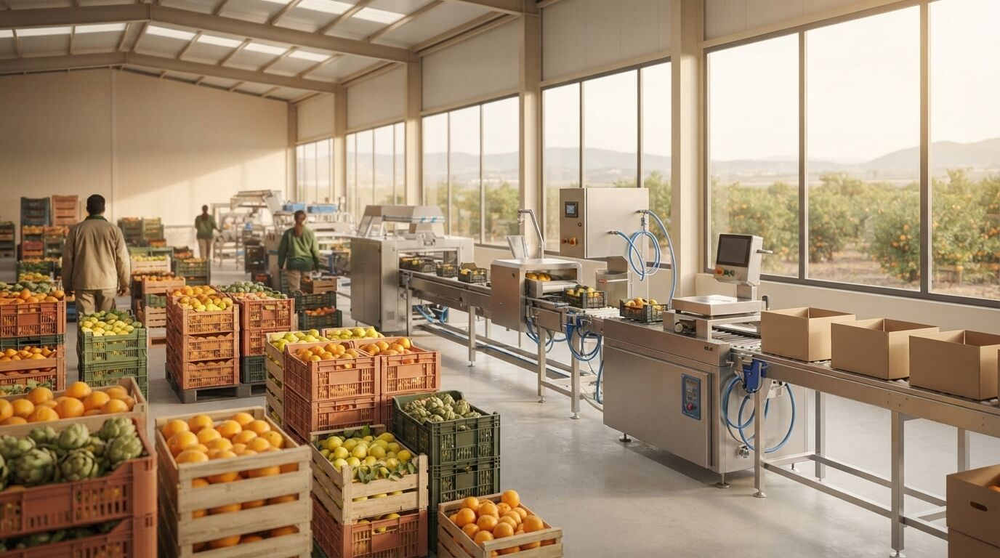

Ayudas y PAC
14 de julio de 2026
28,5 millones en ayudas 2026 para modernizar la industria agroalimentaria valenciana
El DOGV publica la convocatoria 2026 de ayudas a la transformación, comercialización y desarrollo de productos agroalimentarios en la Comunitat Valenciana: 28,5 millones de euros y plazo hasta el 3 de agosto.
Leer artículo →